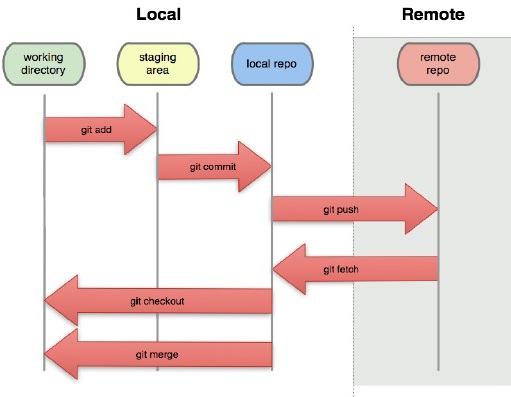

Web Development
Github
Git add: used to add files to the staging area, before it is actually saved/ commited to the local git directory
Git commit: used to save all changes and save it to the local git directory
Git status: to check if there have yet to be staged
Git push: to upload all changes to online repository

HTML(Page content)
How does this website work?
The website uses a seperate html for each nav tab. I copied all the common elements of each webpage, like the nav, header and footer to all the seperate html files and added content afterwords. This means that whenever you click on the nav tab, you are redirected to the corresponding html document.
The highlighted selection on the nav tab is done by assigning the corresponding page name to a div which makes it bold.
CSS(Page appearance)
Using CSS, i can customise how i want my website to look, for example, i can create a div for titles that allows me to modify how the title will look and nothing else. While HTML makes up the content, CSS determines how the website will be laid out and how it will look in the end.
For example CSS can:
- Make containers and define their size and position in the webpage
- Add padding to the left and right of the screen
- Change background colour of text
- Change colour of text
- Change how the text appears on your screen
-
Change text font
Change the size of text
- make it bold
- make it italic
- highlight certain parts of text
strikethroughselected text
-
It is also possible to remove the dots from a list, which comes in useful in the navigation tab.
- example one
- example two
- example three